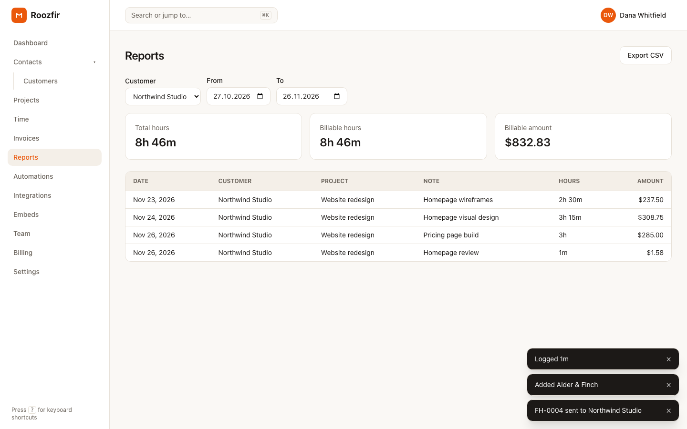

Help Center » Reports, team and automations
How to export a report as a CSV file
Reports show hours and money by customer and date range. You can download what you see as a CSV file for a spreadsheet.
- Click Reports in the left-hand menu.
- Choose a Customer and set the From and To dates. The table updates as you change them.

The Reports page filtered to one customer - Click Export CSV. Your browser downloads a file with the rows you are looking at.